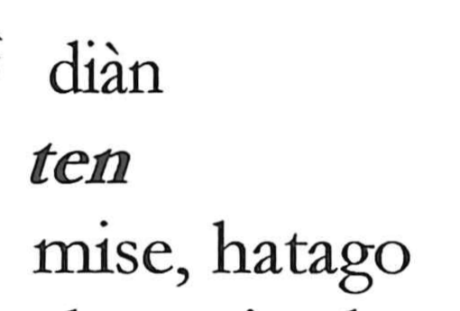

店

Kun: mise | On: ten
shop ・ inn ・ hotel
Explanation
店 combines 广, a roofed space, with the sound element 占. It was probably a variant of 坫, the stand at the corner of a hall on which a wine cup was set after use. The stand provided a defined place for arranging and displaying objects.
Goods could likewise be laid out at the side of a hall, as cups were placed on the stand. 店 consequently came to mean a shop: the place where merchandise is set out for sale. The word later also named a traveller’s lodging or inn. Its commercial uses retain the idea of an established place in which goods or services are provided.